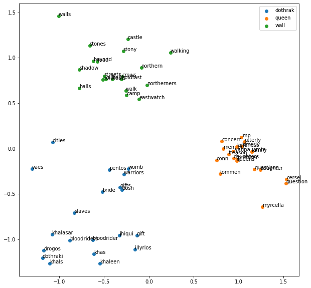

Embedding
One of the key tasks of natural language processing is word embedding. As machine learning algorithms require numerical input, text data should be converted to meaningful vectors, which is called word embeddings. There are two ways to obtain such embeddings:
- Use pre-trained vectors such as GloVe or Bert.
- Train embeddings yourself.
If you choose the second option, you should decide whether you will train embeddings separately from the main (e.g. one-hot encoding, word2vec) or during the model training (using Embedding layer in Neural Networks, which anyway requires one-hot encoding).
So one-hot encoding is the “simplest” way of encoding. Result of this method is N (number of input samples) encoded vectors with length equal to the size of the vocabulary. Vocabulary is a list of unique words.
For example, for sentences “It is a number” and “It is a text” the vocabulary is [a, is, it, number, text] and one-hot encoded vectors are: “It is a number” - [1, 1, 1, 1, 0]; “It is a text” - [1, 1, 1, 0, 1]. But in practice these vectors can become enormous because of the huge vocabulary size. Moreover the difference or similarity of these vectors doesn’t represent their lexical difference or similarity.
Therefore, there are other algorithms of word representation, which provide similar representation to similar words.
Word2vec
Word2vec trains vectors depending on words co-occurrence: if some words often take place in the same context, they are located closer to each other in the vector space. The architecture of word2vec is similar to encoders and it works in one of the two ways: predict a word using a context (continuous bag of words - CBOW) or predict a context using a word (skip-gram). The results of the algorithm were almost magical at that moment, what is shown in the famous example in the original paper: king - man + woman = queen.
Nevertheless, after this paper a lot of other “better” algorithms (like BERT and then GPT) have appeared. They use different architecture (like transformers) and provide higher accuracy. We’ll not go into the details of other models, but we’re going to try word2vec on practice. Let’s train embeddings on the Game of Thrones book using gensim library.
Game of Thrones
The famous book contains three main storylines: the Seven Kingdom and the queen; the Wall and the Starks; and Khal Drogo and the Narrow Sea. Using the trained model I’ve obtained the 20 most similar words of the following topics: queen, wall, dothraki and got a quite good result. There are some notable words among the “associations” of the model: Queen: cersei, myrcella, joff, tommen, utterly, concern Wall: eastwatch, kingsroad, walking, wolfswood, battlements, wildlings, northern, northerness Dothrak: vaes, warriors, khal, bloodrider, handmaids
We can visualize PCA components to get some vision of how those words relate to each other within the groups and how the groups are located in two-dimensional space. 
This scatter plot doesn’t say much about the data as it shows PCA components, but we can conclude the groups are distinguishable. The lists of the closest words includes some redundant words (words in plural, adverbs and other), we can discard or get base form of such kinds of words, which depends on the final goal. We can improve the results by doing more advanced preprocessing and providing deeper research to adjust model’s parameters, which are more relevant for “understanding” the book’s characters and their stories. The code is available on GitHub. Feel free to open pull requests.